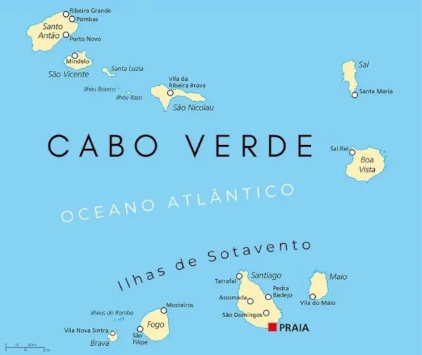
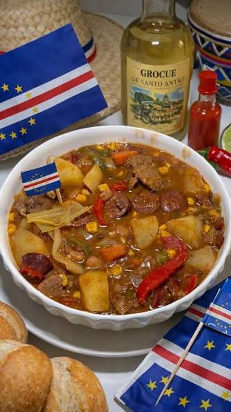
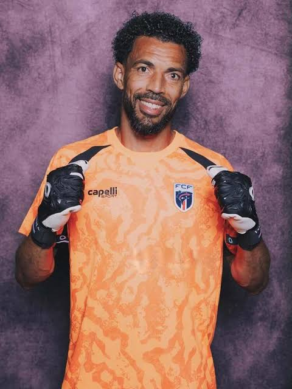
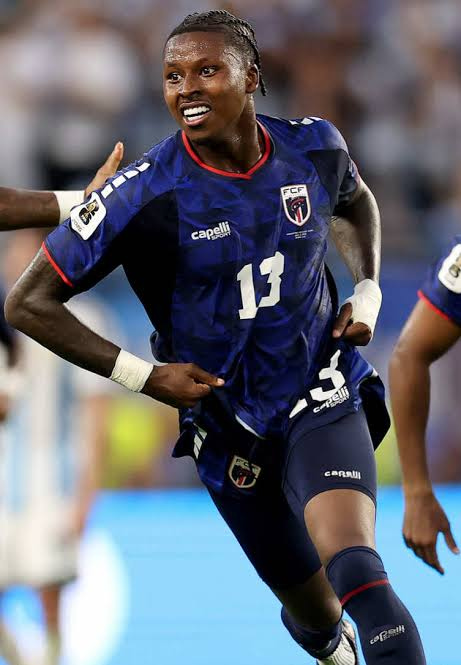

Arquipélago do Atlântico
Cabo Verde é um país insular localizado no Oceano Atlântico, na costa oeste da África, formado por dez ilhas vulcânicas. O arquipélago foi descoberto pelos portugueses em 1460 e passou a ser colonizado por Portugal, tornando-se um importante ponto de comércio marítimo e de tráfico de pessoas escravizadas entre a África, a Europa e as Américas. Após anos de luta pela independência, Cabo Verde tornou-se um país independente em 5 de julho de 1975. Desde então, destaca-se por sua estabilidade política e desenvolvimento em comparação com outros países da região.

Mapa de Cabo Verde.
A cultura cabo-verdiana resulta da mistura das tradições africanas e portuguesas. O idioma oficial é o português, mas a maior parte da população utiliza o crioulo cabo-verdiano no dia a dia. A música é um dos maiores símbolos do país, com estilos como morna, coladeira, funaná e batuku, sendo a cantora Cesária Évora a artista mais famosa internacionalmente. A culinária também é marcante, com destaque para a cachupa, prato tradicional preparado com milho, feijão, carnes ou peixes.

Cachupa
A seleção de Cabo Verde participou pela primeira vez da Copa do Mundo da FIFA em 2026, após conquistar uma classificação histórica nas eliminatórias africanas. No Mundial, ficou no Grupo H ao lado de Espanha, Uruguai e Arábia Saudita. A equipe surpreendeu ao empatar com Espanha e Uruguai, avançar para o mata-mata e fazer uma campanha muito acima das expectativas para um estreante. Nos 16 avos de final, enfrentou a Argentina em uma partida emocionante. O goleiro Vozinha foi um dos grandes destaques do confronto, realizando diversas defesas importantes e mantendo Cabo Verde vivo na disputa. A equipe ainda marcou com Sydney Lopez, que fez o primeiro gol cabo-verdiano em uma fase de mata-mata de Copa do Mundo, e o gol mais bonito da copa de 2026. Apesar da eliminação, a atuação foi bastante elogiada e entrou para a história do futebol do país. Essa participação representou um marco para o futebol cabo-verdiano e aumentou a visibilidade internacional de Cabo Verde.

Vozinha.

Gol mais bonito da copa.